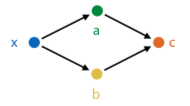
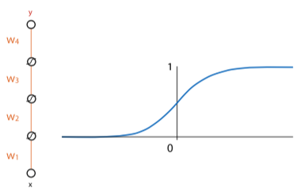

Deep learning systems (autodiff engines)
Tensors
To scale up backpropagation, want to move from operations on scalars to
tensors.
Tensor: generalisation of vectors/matrices to higher dimensions. e.g. a
2-tensor has two dimensions, a 4-tensor has 4 dimensions.
You can represent data as a tensor. e.g. an RGB image is a 3-tensor of
the red, green, and blue values for each pixel.
Functions on tensors
Functions have inputs and outputs, all of which are tensors.
They implement:
forward(...): computing outputs given the inputsbackward(...): computing gradients over inputs, given gradients
over outputs
The modules we chain together are defined in a computation graph:

A deep learning system uses this graph to execute a computation (forward
pass), and does backpropagation to compute gradients to data nodes wrt
the output (backward pass).
Autodiff engine
- Perform computation by chaining functions
- keeps track of all computation in a computation graph
- when computation done, walk backward through computation graph for
backpropagation - eager evaluation: build graph as we perform computation
Backpropagation revisited
Functions can have any number of inputs and outputs, which must be
tensors.
The final output must be a scalar (i.e. always take derivative of scalar
function).
Multivariate chain rule
How do you take derivatives when variables aren't scalars?
Multiple inputs:

How do you find the derivative with two inputs? Use the multivariate
chain rule, i.e. take single derivative for each input and then sum
them.
Backpropagation with tensors - matrix calculus
Start with scalar derivatives: one output over one input (just pick a
random one)
Tensor derivative: put all possible scalar derivatives into a tensor.
But how to arrange/order the tensor?
Solution: accumulate the gradient product.
forward(x): given input x, compute output y
backward(ly): given , compute
.
convention: gradient of A has same shape as A
Example:
Let:
- k = Wx + b
- forward(W, x, b): compute Wx + b
- backward(lk): compute
Steps:
- work out scalar derivative:
- apply multivariate chain rule
- now we know that
- so,
Making deep neural nets work
Overcoming vanishing gradients
If weights of network are initialized too high, activations will hit
rightmost part of gradient, so local gradient for each node will be very
close to zero. So network won't start learning.
If they are too negative, then hit leftmost part of sigmoid, and get the
same problem.

ReLU preserves derivatives for nodes whose activations it lets through.
Kills derivatives for nodes that produce negative value, but as long as
network is properly initialised, around half of values in batch will
always produce positive input for ReLU.
Still risk that durin training, the network will move to configuration
where neuron always produces negative input for every instance in data.
In that case, end up with a dead neuron - its gradient will always be
zero, no weights below that neuron will change anymore (unless they also
feed into a non-dead neuron).
Initialization:
- assume that the layer input is roughly distributed so that its mean
is 0 and variance is 1 in every direction (standardise/normalise
data so this is true for first layer) - initialisation designed to pick a random matrix that keeps these
properties true
Minibatch gradient descent
Like stochastic gradient descent, but with small batches of instances,
instead of single instances.
- smaller batches: close to stochastic gradient descent, more noisy,
less parallelism - bigger batches: more like regular gradient descnet, more
parallelism, limit is memory
In general, stay between 16 and 128 instances.
Optimizers
Momentum
If gradient descent is a hiker in a snowstorm, moment gradient descent
is a boulder rolling down the hill.
Gradient doesn't affect its movement directly, but acts as a force on
moving object. If gradient is zero, updates continue in the same
direction, but slowed down by a 'friction constant' (μ).
Regular gradient descent:
With momentum:
Nesterov momentum
In regular momentum, actual stem taken is sum of two vectors: the
momentum step (in direction we took last iteration) and gradient step
(in direction of steepest descent at current point)
This evaluates gradient after the momentum step, since we are taking
that step anyway. Makes the gradient a bit more accurate.
Adam
Combines idea of momentum with idea that each weight should have its own
learning rate.
Normalize gradients: keep running mean m and uncentered variance v, for
each parameter over the gradient. Subtract these instead of the
gradient.
Calculations:
Regularizers
The bigger your model is, the bigger the capacity for overfitting.
Regularizers pull the model back towards simpler models, but don't
eliminate more complex solutions.
L2 regularizer
"Simpler means smaller parameters"
Take all params, stick them in one vector ("θ"). Then
Models with bigger weights get higher loss, but if it's worth it (i.e.
original loss decreases enough), they can still beat simpler models.
If you have a bowl where you want to roll a marble to the lowest point,
L2 loss is like tipping the bowl slightly to the right (shifting the
lowest point).
L1 regulariser
"Simpler means smaller parameters and more zero parameters"
lp norm: \|\theta\|^{p} = \sqrt^{p}{w^{p}+b^{p}}
If you have a bowl where
you want to roll a marble to the lowest point, L1 loss is like using a
square bowl -- if it has groves along dimensions, marble is likely to
end up in one of the grooves.
Dropout regularisation
"Simpler means more robust; during training, randomly disable hidden
units"
During training, remove hidden and input nodes, each with probability p.
This prevents co-adaptation -- multiple neurons firing together in
specific combinations.
The analogy is if you can learn how to do a task repeatedly whilst
drunk, you should be able to do the task sober. So basically, do all of
the practice exams while drunk, and then you'll ace the final while
sober (or you'll fail and disprove all of machine learning, choose your
destiny). But if anyone asks, I didn't tell you to do that.
Convolutional neural networks
Disclaimer: I'm gonna revise these notes, the prof basically covered
all of CNN theory in ten minutes lol. So I don't have much here atm.
Hidden layer has shape of another image, with more channels.
Hidden nodes only wired to nearby nodes in the previous layer.
Weights are shared, each hidden node has same weights as the previous
layer.
Maxpooling reduces image dimensions.
Deep learning vs machine learning
In ML, you chain things together. But chaining modules that are 99%
accurate doesn't mean the whole pipeline is 99% accurate, as error
accumulates.
In deep learning, make each module differentiable - ensure that we can
work out local gradient, so we can train pipeline as a whole using
backpropagation. This is "end-to-end learning".
It's a lower level of abstraction, giving you smaller building blocks.